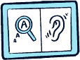

What is Tech For Good (T4G)?
Tech For Good (T4G) by Engineering Good is an annual innovation festival that unites young innovators aged 18-30, technical mentors, and community partners to develop Assistive Technology (AT) that benefits persons with disabilities (PWDs) and their caregivers.
From June to September, participants go through ideation, prototyping, and iteration, culminating in a public festival to showcase their prototypes.
Your invention could be incubated and implemented to change lives!
Impact Over The Years
Five years of impact – and we’re just getting started. Innovators 0 Mentors 0
Projects 0 Community 0Past Festivals
Discover our impact through past festivals! See how our community of innovators came together to create positive change through technology, from our first T4G in 2019 to our most recent events.
T4G2019 T4G2020 T4G2021 T4G2022 T4G2019Tech For Good 2019, our v1.0
The inaugural edition featured over 50 challenge statements from 16 Community Partners. 29 shortlisted teams showcased their prototypes at the Festival held at The Plaza, National Library (Bugis) on 2 November 2019.
The Festival was a flurry of activities from teams showcasing their innovations, assistive switches workshops and music performances. The event was graced by Minister Desmond Lee and visited by over 200 members of the public.
Key projects included a one-handed nail trimmer for a stroke survivor, an image recognition AI that guides blind people when crossing the road, and a penguin toy & game that teaches children with special needs about their neighbourhood.
Check out our media mentions for 2019’s event here:
- 科技行善”创意工作坊和比赛要吸引2万人参加, Channel 8 Morning Express, 2 Aug 2019
- They Learnt Coding As Toddlers – Now Created AI Solution To Help Visually Impaired Cross Roads Safely, Vulcan Post
- 30 teams of youths innovate for people with disabilities, Channel News Asia, 3 Nov 2019
- Sisters use coding as force for good, The New Paper, 1 Nov 2019
Go Digital ASEAN, a Tech For Good Innovation Challenge 2020
Due to the COVID-19 pandemic, the innovation challenge was taken online as Go Digital ASEAN, a Tech For Good Innovation Challenge, in partnership with The Asia Foundation, with support from Google.org. This event aimed to empower youths with disabilities in finding, enabling and retaining employment through innovative software solutions.
4 shortlisted teams participated in an online Bootcamp covering design thinking and inclusive design, hearing from professionals in accessible fashion and technology. They showcased their innovations at the online event, where experts in Assistive Technology shared their insights and feedback. Engineering Good has continued to support the projects EasyBoard and EyeHear.
Check out our 2020 media mentions here:
- Students devise tech solutions to help people with disabilities, The Straits Times , 3 Jun 2021
- Soul of Business: Face-to-Face Communication for the Hearing Impaired, Money FM 89.3, 25 May 2021
- Vanakkam Singai – ‘Easyboard’ app created by NUS High School Students, Mediacorp Oli 968, 13 July 2021
- Technology to help face challenges, Tamil Murasu, 31 May 2021
Tech For Good 2021
In 2021, Tech For Good was back in full-force through the virtual realms of Zoom and Gather Town! With a whopping 150 students in 40 teams, 40 mentors 26 problem statements and 10 community partners, it was our biggest run to date. Projects include: improving telescope canes for the visually impaired, tablet application to encourage cognitive stimulation in elderly and everything in between! EG has also continued to nurture 5 projects, such as a smart walker for the elderly, a chrome extension that aims to make the web more accessible, and a smart pulley system for better upper body rehabilitation.
The teams showcased their innovations at our online Festival on 6 Nov 2021, where Minister Desmond Lee, and representatives from our co-producer, Singapore Institute of Technology, Assoc Prof Intan Azura Mokhtar and Prof Yaacob Bin Ibrahim shared words of inspiration and wisdom in our opening and closing ceremonies.
The Festival also saw our first Assistive Technology Dialogue — Habitech: Living with Assistive Technology. Our 5 guest speakers, who are persons with disabilities, showcased the assistive technology they use in their daily lives. The dialogue was enriched with interesting insights about accessible mainstream tech and the surprising cost of assistive devices. The candid conversation left the audience with food-for-thought about how assistive technology can be made more accessible to more people. You can watch all these and more on our YouTube channel.
T4G2022Tech For Good 2022
2022 saw the ease of event restrictions and we finally could go back to National Library Plaza @ Bugis! This year saw a new format where 6 community partners chose problem statements they wanted to focus on for the year. Each community partner worked with 5 teams and 5 mentors to tackle their problem statement. This meant our community partners had a higher chance of success to create an appropriate and realistic solution for their community.
The projects were:
- Independent Wheelchair Transfers for Motor Neurone Disease Association
- Audible Phone Calls for the Hard-of-Hearing community
- Independent Creative Photography for Muscular Dystrophy Association (Singapore)
- Social Communication Bot for MINDS
- Measuring Liquid Volume for Singapore Association for the Visually Handicapped
- Bowling Mechanism for Cerebral Palsy Alliance Singapore
30 teams and 30 mentors showcased their inventions at the Public Festival, where 970+ visitors came by to learn more about their solutions. Watch their presentations on our YouTube channel. The festival go-ers heard a lunchtime dialogue where our community partners share more about their problem statements, and patronized a marketplace comprising of social enterprises supporting persons with disabilities.
We ended the day with our Guest-of-Honour, Mr Eric Chua, Senior Parliamentary Secretary, Ministry of Culture, Community and Youth & Ministry of Social and Family Development, sharing about the Enabling Masterplan.
Check out our 2022 media mentions here:
- Designed in Singapore: Tools to help those who have disabilities (The Straits Times)
- Johann Annuar Is The Rebel Engineer Who Wants To Bridge The Digital Divide (A+ Magazine featured T4G prototypes)
- Enabling inclusion with assistive technology, community efforts (GovInsider)
- Tech For Good Festival 2022 (Mediacorp Tamil News)
- Tech For Good Festival 2022 4:48 onwards (Channel 8 Frontline News)
- Humanised Design Helps Vulnerable Groups Overcome Obstacles (Channel 8 Morning Express News)